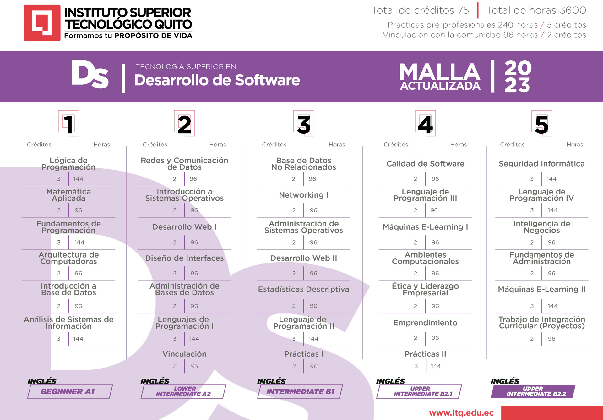
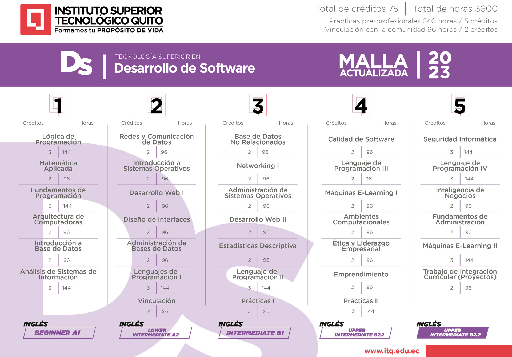

La Carrera de Desarrollo, otorga el título de tercer nivel ofreciendo una formación científica, técnica y humanista, basada en el desarrollo de competencias y habilidades a través de la práctica; su formación es integral,
lo que implica tener los conocimientos para programar y gestionar aplicativos informáticos aplicando metodologías ágiles que se encuentra en tendencia a nivel global.
La carrera Tecnología en Desarrollo de Software forma profesionales capaces de gestionar actividades de trabajo relacionadas a procesos de diseño y desarrollo de software,
automatización de procesos en áreas de soporte
de infraestructura tecnológica, soporte de redes de datos, gestión de proyectos tecnológicos,
con destrezas para operar sistemas informáticos basados en los fundamentos de diseño de estructuras y plataformas informáticas con estándares internacionales.
 
